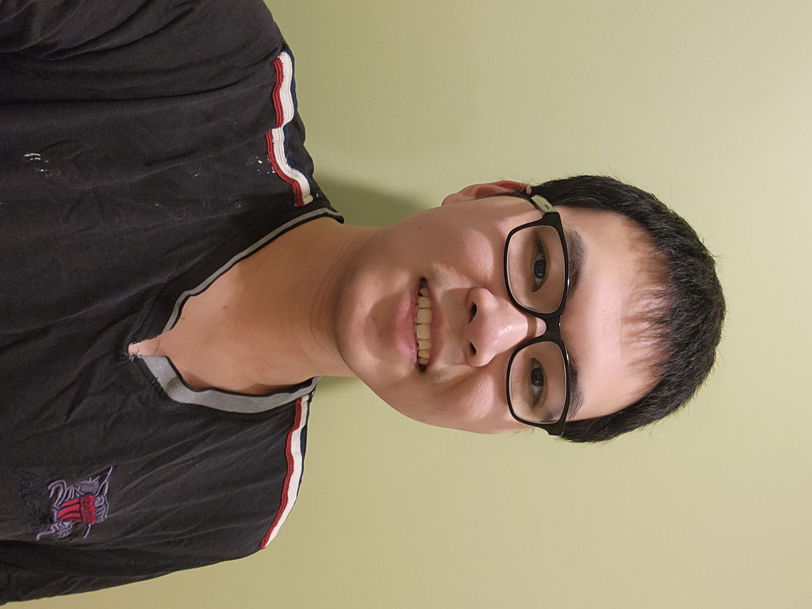

Jacky Wu

Summary
I am a junior web developer and game developer who is experienced in version control systems and agile methodologies. Committed to continuous learning and innovation.
Education
- Certification of Game Developer -
Circuit Stream Game Developer Bootcamp (2023-2024)
- Bachelor of Science Combined Major Computer Science and Mathematics -
University of British Columbia (2019-2024)
- Associated of Science Degree in Computer Science -
Langara College (2016-2019)
Work experience
Skills
Awards and Certifications
- Employee of the Month - McDonald's Corporation (December 2023)
Other